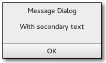

Gtk.MessageDialog
Example
Methods
| Inherited: | Gtk.Dialog (14), Gtk.Window (117), Gtk.Bin (1), Gtk.Container (27), Gtk.Widget (256), GObject.Object (33), Gtk.Buildable (10) |
|---|
| format_secondary_markup(message_format) | |
| format_secondary_text(message_format) | |
| get_image() | |
| get_message_area() | |
| set_image(image) | |
| set_markup(str) |
Virtual Methods
| Inherited: | Gtk.Dialog (2), Gtk.Window (5), Gtk.Container (10), Gtk.Widget (82), GObject.Object (7), Gtk.Buildable (10) |
|---|
Properties
| Inherited: | Gtk.Dialog (1), Gtk.Window (33), Gtk.Container (3), Gtk.Widget (38) |
|---|
| Name | Type | Flags | Short Description |
|---|---|---|---|
| buttons | Gtk.ButtonsType | w | The buttons shown in the message dialog |
| image | Gtk.Widget | r/w | The image |
| message-area | Gtk.Widget | r | Gtk.VBox that holds the dialog’s primary and secondary labels |
| message-type | Gtk.MessageType | r/w/c | The type of message |
| secondary-text | str | r/w | The secondary text of the message dialog |
| secondary-use-markup | bool | r/w | The secondary text includes Pango markup. |
| text | str | r/w | The primary text of the message dialog |
| use-markup | bool | r/w | The primary text of the title includes Pango markup. |
Style Properties
| Inherited: | Gtk.Dialog (4), Gtk.Window (2), Gtk.Widget (17) |
|---|
| Name | Type | Default | Flags | Short Description |
|---|---|---|---|---|
| message-border | int | 12 | r | Width of border around the label in the message dialog |
Signals
| Inherited: | Gtk.Dialog (2), Gtk.Window (5), Gtk.Container (4), Gtk.Widget (69), GObject.Object (1) |
|---|
Fields
| Inherited: | Gtk.Dialog (1), Gtk.Window (1), Gtk.Bin (1), Gtk.Container (1), Gtk.Widget (1), GObject.InitiallyUnowned (3), GObject.Object (3) |
|---|
| Name | Type | Access | Description |
|---|---|---|---|
| parent_instance | Gtk.Dialog | r |
Class Details
- class Gtk.MessageDialog(parent=None, flags=0, message_type=<enum INFO of type MessageType>, buttons=<enum NONE of type ButtonsType>, message_format=None, **kwds)
Bases: Gtk.Dialog
Gtk.MessageDialog presents a dialog with some message text. It’s simply a convenience widget; you could construct the equivalent of Gtk.MessageDialog from Gtk.Dialog without too much effort, but Gtk.MessageDialog saves typing.
One difference from Gtk.Dialog is that Gtk.MessageDialog sets the Gtk.Window :skip-taskbar-hint property to True, so that the dialog is hidden from the taskbar by default.
The easiest way to do a modal message dialog is to use Gtk.Dialog.run (), though you can also pass in the Gtk.DialogFlags.MODAL flag, Gtk.Dialog.run () automatically makes the dialog modal and waits for the user to respond to it. Gtk.Dialog.run () returns when any dialog button is clicked.
An example for using a modal dialog:
<!-- language="C" --> GtkDialogFlags flags = GTK_DIALOG_DESTROY_WITH_PARENT; dialog = gtk_message_dialog_new (parent_window, flags, GTK_MESSAGE_ERROR, GTK_BUTTONS_CLOSE, "Error reading “%s”: %s", filename, g_strerror (errno)); gtk_dialog_run (GTK_DIALOG (dialog)); gtk_widget_destroy (dialog);
You might do a non-modal Gtk.MessageDialog as follows:
An example for a non-modal dialog:
<!-- language="C" --> GtkDialogFlags flags = GTK_DIALOG_DESTROY_WITH_PARENT; dialog = gtk_message_dialog_new (parent_window, flags, GTK_MESSAGE_ERROR, GTK_BUTTONS_CLOSE, "Error reading “%s”: %s", filename, g_strerror (errno)); // Destroy the dialog when the user responds to it // (e.g. clicks a button) g_signal_connect_swapped (dialog, "response", G_CALLBACK (gtk_widget_destroy), dialog);
# Gtk.MessageDialog as Gtk.Buildable
The Gtk.MessageDialog implementation of the Gtk.Buildable interface exposes the message area as an internal child with the name “message_area”.
- format_secondary_markup(message_format)
Sets the secondary text of the message dialog to be message_format (with printf()-style), which is marked up with the [Pango text markup language][PangoMarkupFormat].
Due to an oversight, this function does not escape special XML characters like Gtk.MessageDialog.new_with_markup () does. Thus, if the arguments may contain special XML characters, you should use GLib.markup_printf_escaped () to escape it.
<!-- language="C" --> gchar *msg; msg = g_markup_printf_escaped (message_format, ...); gtk_message_dialog_format_secondary_markup (message_dialog, "%s", msg); g_free (msg);
New in version 2.6.
- format_secondary_text(message_format)
Sets the secondary text of the message dialog to be message_format (with printf()-style).
New in version 2.6.
- get_image()
Returns: the dialog’s image Return type: Gtk.Widget Gets the dialog’s image.
New in version 2.14.
Deprecated since version 3.12: Use Gtk.Dialog for dialogs with images
- get_message_area()
Returns: A Gtk.VBox corresponding to the “message area” in the message_dialog. Return type: Gtk.Widget Returns the message area of the dialog. This is the box where the dialog’s primary and secondary labels are packed. You can add your own extra content to that box and it will appear below those labels. See Gtk.Dialog.get_content_area () for the corresponding function in the parent Gtk.Dialog.
New in version 2.22.
- set_image(image)
Parameters: image (Gtk.Widget) – the image Sets the dialog’s image to image.
New in version 2.10.
Deprecated since version 3.12: Use Gtk.Dialog to create dialogs with images
- set_markup(str)
Parameters: str (str) – markup string (see [Pango markup format][PangoMarkupFormat]) Sets the text of the message dialog to be str, which is marked up with the [Pango text markup language][PangoMarkupFormat].
New in version 2.4.
Property Details
Name: buttons Type: Gtk.ButtonsType Default Value: Gtk.ButtonsType.NONE Flags: w The buttons shown in the message dialog
- Gtk.MessageDialog.props.image
Name: image Type: Gtk.Widget Default Value: None Flags: r/w The image for this dialog.
New in version 2.10.
Deprecated since version 3.12: Use Gtk.Dialog to create dialogs with images
- Gtk.MessageDialog.props.message_area
Name: message-area Type: Gtk.Widget Default Value: None Flags: r The Gtk.Box that corresponds to the message area of this dialog. See Gtk.MessageDialog.get_message_area () for a detailed description of this area.
New in version 2.22.
- Gtk.MessageDialog.props.message_type
Name: message-type Type: Gtk.MessageType Default Value: Gtk.MessageType.INFO Flags: r/w/c The type of the message.
- Gtk.MessageDialog.props.secondary_text
Name: secondary-text Type: str Default Value: None Flags: r/w The secondary text of the message dialog.
New in version 2.10.
- Gtk.MessageDialog.props.secondary_use_markup
Name: secondary-use-markup Type: bool Default Value: False Flags: r/w True if the secondary text of the dialog includes Pango markup. See Pango.parse_markup ().
New in version 2.10.
- Gtk.MessageDialog.props.text
Name: text Type: str Default Value: '' Flags: r/w The primary text of the message dialog. If the dialog has a secondary text, this will appear as the title.
New in version 2.10.
- Gtk.MessageDialog.props.use_markup
Name: use-markup Type: bool Default Value: False Flags: r/w True if the primary text of the dialog includes Pango markup. See Pango.parse_markup ().
New in version 2.10.